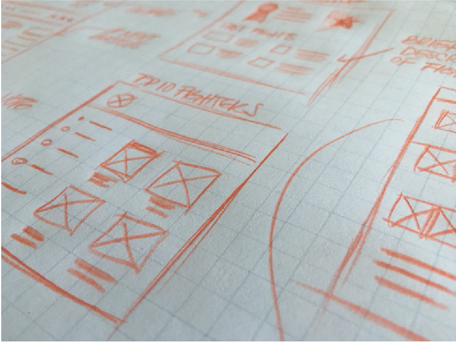
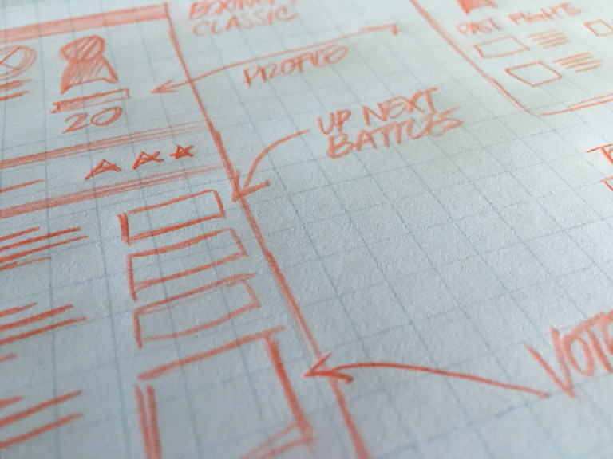

Case Study: "Hashfighters"
After the idea for HashFighter was fleshed out, UI mockups were created to understand the blueprint of the project.
 
A prototype was quickly built with Adobe Illustrator to capture the overall design of the project. Old boxing posters were sources of inspiration behind the design.
One of the initial design issues where how to to give the tweets its respective space. Afterall, the tweets are the 'commentators' and as such keeps the user coming back to website to read the updates.

Some of the issues encountered were how the incoming tweets where affecting the animation

To solve the issue, the timer to capture the tweets was increased to give the animation time to be triggered.